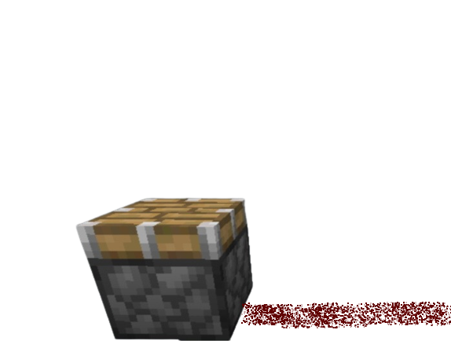
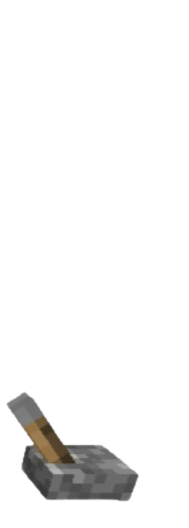
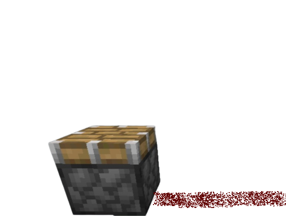
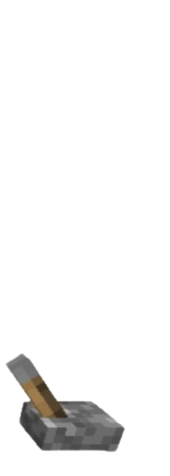

Minecraft: el juego más vendido del mundo
 



← Click
Minecraft es un juego de construcción, exploración y supervivencia que se lanzó en 2009 y que ha vendido más de 200 millones de copias en todas las plataformas. ¿Qué hace que Minecraft sea tan popular y adictivo? Aquí te lo contamos.
La historia de Minecraft
Minecraft fue creado por el desarrollador sueco Markus "Notch" Persson, quien se inspiró en juegos como Dwarf Fortress, Infiniminer y Dungeon Keeper. El juego comenzó como un proyecto personal de Notch, que lo publicó en su blog y lo distribuyó a través de Internet. El juego pronto atrajo la atención de los jugadores y de la prensa, que alabaron su creatividad y libertad. En 2010, Notch fundó la compañía Mojang para seguir desarrollando el juego con un pequeño equipo. En 2011, el juego salió de la fase beta y se lanzó oficialmente. En 2014, Microsoft compró Mojang y Minecraft por 2.500 millones de dólares. Desde entonces, el juego ha recibido numerosas actualizaciones, expansiones y versiones para diferentes dispositivos y plataformas.
El modo de juego de Minecraft
Minecraft se basa en un mundo generado de forma aleatoria y compuesto por bloques de diferentes materiales, que el jugador puede colocar, mover o destruir. El jugador puede explorar el mundo, recolectar recursos, fabricar objetos, construir estructuras y combatir contra enemigos. El juego tiene dos modos principales: el modo supervivencia y el modo creativo. En el modo supervivencia, el jugador tiene que mantener su salud, su hambre y su armadura, y enfrentarse a los peligros del mundo, como los monstruos, el fuego o la lava. En el modo creativo, el jugador tiene acceso ilimitado a todos los recursos y puede construir lo que quiera sin restricciones. Además, el juego tiene otros modos secundarios, como el modo aventura, el modo espectador y el modo hardcore. El juego también permite el juego multijugador, tanto en línea como en local, y la creación y el uso de mapas, mods y servidores personalizados por la comunidad.
¿Por qué Minecraft es el juego más vendido del mundo?
Minecraft es el juego más vendido del mundo por varias razones. Una de ellas es su sencillez y accesibilidad, ya que el juego se puede jugar en cualquier dispositivo y con cualquier nivel de habilidad. Otra razón es su variedad y diversidad, ya que el juego ofrece un mundo infinito y diferente cada vez, con múltiples posibilidades y opciones para el jugador. Otra razón es su creatividad e innovación, ya que el juego estimula la imaginación y la expresión del jugador, que puede crear sus propias obras de arte, historias y experiencias. Otra razón es su comunidad y cultura, ya que el juego cuenta con millones de fans y creadores que comparten sus contenidos, consejos y opiniones en Internet, y que organizan eventos, concursos y colaboraciones. Por último, otra razón es su influencia y trascendencia, ya que el juego ha inspirado a otros juegos, medios y campos, y ha sido utilizado como herramienta educativa, artística y social.
En conclusión, Minecraft es un juego que se ha convertido en un fenómeno global y que ha marcado un antes y un después en la historia de los videojuegos. Si aún no lo has probado, te invitamos a que lo hagas y descubras por ti mismo por qué Minecraft es el juego más vendido del mundo.